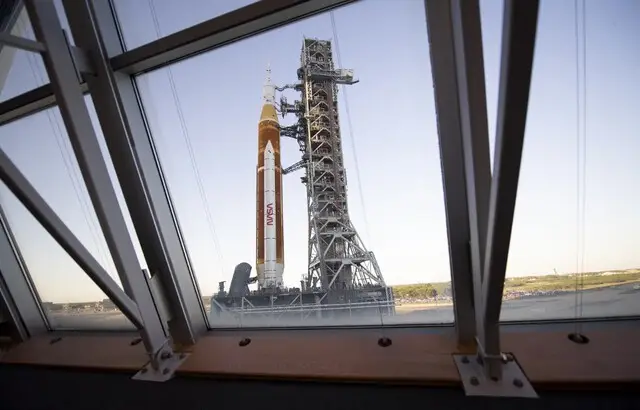

Espace : Le programme Artemis vers la Lune se précise, une bouffée d’air pour l’Europe ?

La fusée, avec à son bord le vaisseau spatial Orion, doit encore subir une série de tests. Le 3 avril, il s’agira notamment d’y charger plus de 3 millions de litres de carburant cryogénisé et de répéter chaque étape du compte à rebours jusqu’aux 10 dernières secondes, sans déclencher les moteurs. La fusée sera ensuite vidangée de son carburant pour faire la démonstration d’un lancement avorté en toute sécurité.
Si ces essais sont concluants, il s’agira alors de passer au premier décollage vers la Lune. Ce sera la mission Artemis I, point de départ du programme. « Deux fenêtres de lancement sont avancées, entre le 7 et le 21 mai ou, plus probablement, entre le 6 et le 16 juin », indique Philippe Deloo, chef du programme « European service module » (ESM) d’Orion au sein de l’Agence spatiale européenne (ESA). Très vite après le décollage, le SLS se séparera de son étage supérieur, où se trouve Orion, et laissera le vaisseau spatial poursuivre son voyage vers la Lune. La durée du périple est une autre inconnue à ce jour. Deux options sont sur la table suivant la date du lancement, raconte Philippe Deloo. « Orion pourrait soit faire une seule fraction d’orbite autour de la Lune avant d’amorcer un retour vers la Terre – la mission durerait alors 28 jours –, soit une orbite complète plus une fraction d’orbite avant, là encore, de reprendre le chemin de la Terre – pour un voyage de 42 jours. »
A cette première mission doit succéder Artemis II, prévu au printemps 2024. Avec des astronautes à bord cette fois-ci, mais sans alunissage encore. La mission consistera « seulement » à amener un équipage d’astronautes américains et canadiens jusqu’à l’orbite lunaire avant de revenir sur Terre. Il faudra donc attendre Artemis III pour voir de nouveau des astronautes fouler le sol lunaire. Une femme et une personne de couleur, prévoit la Nasa. La date, elle, reste floue. Début mars, Paul Martin, inspecteur général de la Nasa, évoquait 2026 au mieux. Quoi qu’il en soit, Artemis ne vise pas seulement à fouler de nouveau la Lune. L’idée est aussi d’installer, en orbite lunaire, la station spatiale Gateway. Elle permettra d’enchainer les missions sur la Lune et servira de base avancée sur la route vers Mars. Pour l’acheminer et l’assembler, il faudra donc dédier de nouvelles missions Artemis.
30/03/22 à 11h19